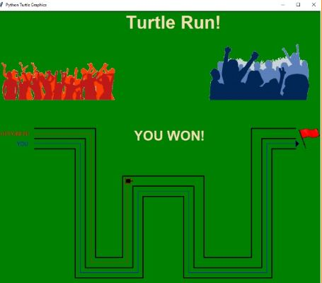
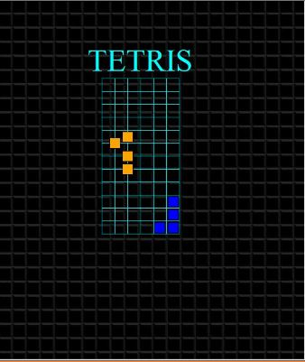
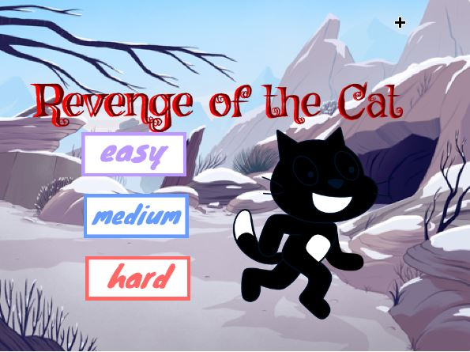
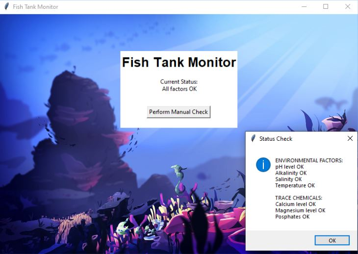
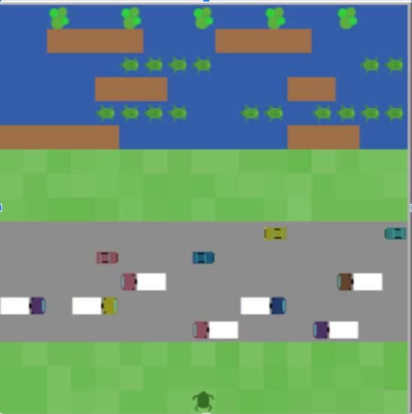

Home
Portfolio
About Me
This is my Portfolio Page!
My 1.1.9 Project!

In this game called "Turtle Run" we created a track for two racers to compete on. It is the you the player versus the opponent and in order for you to move forward you must answer the questions asked to you correctly, if you answer a question incorrectly then you saty still while your opponent moves, but if you answer a question correctly the you move while the opponent stays still. In order to win you must answer all the questions correctly.

This is a recreation of Tetris for my 1.2.5 project. The shape spawns and the player has to move the shape so they all line up in one row and win. Very Fun!

This is my Scratch game called Revenge of the Cat where you play as a mouse trying to eat cheese while a cat is trying to eat you. There are different difficulties and different maps to play in, if the cat gets to you then you lose and have to restart.

This is my PLTW 2.1.6 Fish Tank project where we de-bugged and changed code so that all the errors in it could be fixed.

This is my NetLogo project where we analyzed and explained how the program Frogger worked and all its components along with its relation to the real world. The model simulates a frog jumping across the screen trying to get to the other side dodging the cars and water. The randomness of the model means that the cars and logs in the river are randomly placed and the speed is randomly chosen.